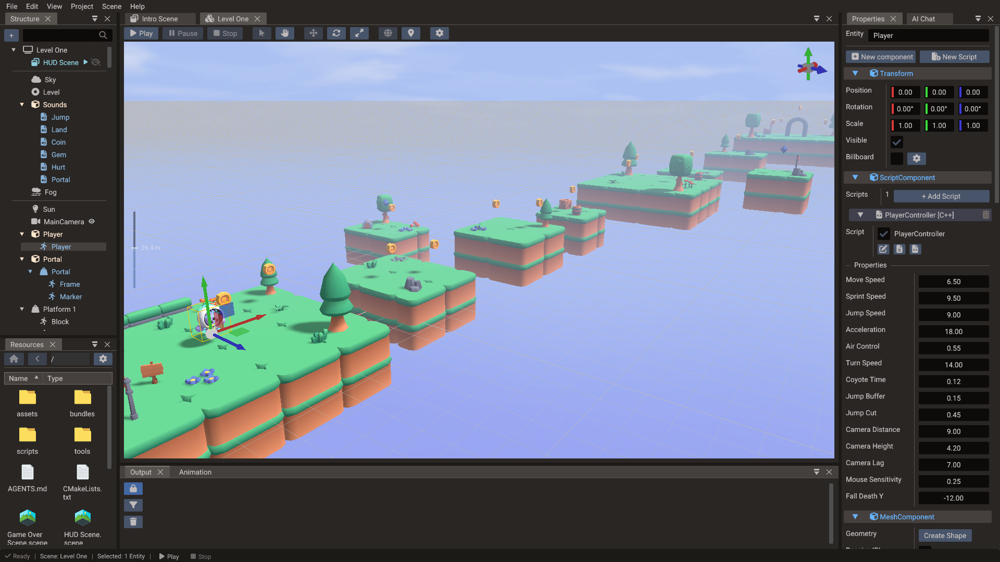
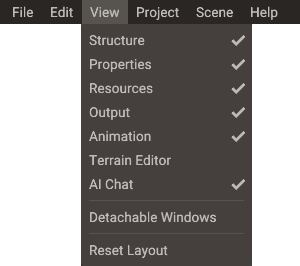
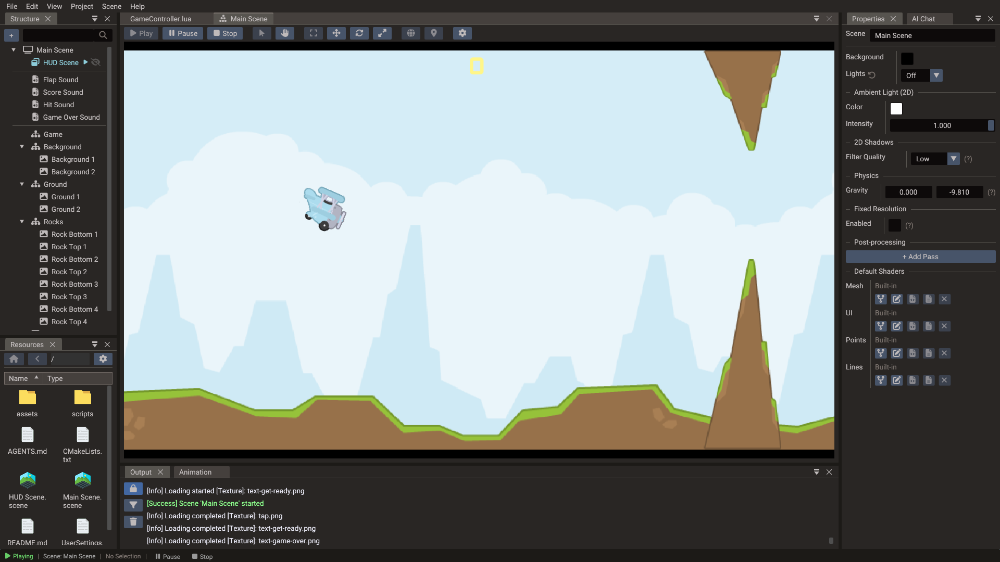

Editor Overview¶
The Quantum editor is the primary authoring environment for your projects. It brings together scene editing, resource management, scripting, animation, play mode, and export tooling in one unified window so you can build, test, and ship games without leaving the editor.

Editor layout¶
The editor window is divided into a set of resizable panels:
| Panel | Purpose |
|---|---|
| Menu bar | File, project, scene, and play-mode controls |
| Scene view | Main viewport for 2D, 3D, and UI scene editing with gizmos |
| Structure panel | Hierarchical tree of scenes and entities |
| Properties window | Component list and property fields for the selected entity |
| Resources Browser | Project asset manager: import, preview, and organize files |
| Animation Timeline | Keyframe editor for object animation, sprite frames, and bones |
| Code Editor | Integrated Lua and C++ editor with API completion and an event menu |
| AI Chat | The built-in AI assistant, docked as a tab beside Properties. Its keys are in Editor Settings → AI, and outside agents reach its tools through the MCP server |
| Network Play | Launch two independent server/client runtime windows for local multiplayer testing; see Network Play |
| Output panel | Build logs, play-mode diagnostics, and export messages, persisted to editor.log for crash reports |
| Footer | The Git branch and Play / Pause / Stop on the left; FPS, frame time, draw calls, and triangles on the right |
Menu bar¶
| Menu | Contents |
|---|---|
| File | New Project, Open Project (Ctrl+O), Recent Projects, Save (Ctrl+S), Save All (Ctrl+Shift+S), Save Project As, Export Project, Exit |
| Edit | Undo, Redo, Duplicate, Delete, and Editor Settings |
| View | Show or hide each panel, Detachable Windows, Reset Layout |
| Project | Project Settings, Manage Scenes, Bundles, Empty Project Trash |
| Scene | New Scene (3D / 2D / UI), Run, Pause, Resume, Stop, Detach Camera, Remove Scene from Project |
| Help | Documentation (F1), Keyboard Shortcuts, Report an Issue, About Quantum |

Save writes the one thing you were last working on — the focused script, or the
selected scene. Save All writes every changed scene and script and project.yaml,
which is how settings changes are committed to disk. On a project that has never been
saved, both ask where the project should live first.
Empty Project Trash permanently deletes the project's trashed files and asks for confirmation first. Remove Scene from Project drops a scene from the project, after offering to save it if it has unsaved changes.
Main workflows¶
| Task | Where it happens |
|---|---|
| Create and configure scenes | Project Workflow, Structure panel, scene save dialog |
| Place and transform entities | Scene view gizmos |
| Edit component data | Properties window |
| Import and preview assets | Resources Browser |
| Share PBR materials across meshes | Create .material files (Properties → Resources drag), link from Scene view |
| Slice sprite sheets and tilesets | Sprite Slicer, Tileset Slicer |
| Sculpt, paint and populate terrain | Terrain Editor |
| Write Lua or C++ scripts | Code Editor and script creation dialog |
| Animate objects and characters | Animation Timeline |
| Test gameplay | Play / Pause / Stop controls |
| Prepare builds | Export Window |
| Validate a project headlessly | Command-Line Tools, asset doctor, script lint, and release smoke |
Scene types¶
The editor supports three scene workflows:
| Type | Purpose |
|---|---|
| 3D scene | Games with perspective cameras, 3D models, PBR materials, sky/IBL, and lighting |
| 2D scene | Top-down or side-scrolling games with sprites and tilemaps |
| UI scene | Menus, HUDs, overlays, and screen-space controls using the UI system |
All three types share the same ECS foundation, camera, and scripting system. A project can load multiple scene types simultaneously — for example, a 3D gameplay scene with a UI scene overlay.
Play mode¶

Press Play to run the game inside the editor. The editor takes a snapshot of the current scene state before entering play mode and restores it when you stop, so runtime mutations do not permanently corrupt your authored data. Entities the game creates while playing are listed in the Structure panel, read-only, until Stop destroys them (see Structure panel — While playing).
Use play mode for quick iteration. For platform-specific validation (mobile input,
web memory limits, native graphics), test with a proper exported build. The footer
shows FPS, frame time, draw calls, and triangles while the viewport is drawing; the
benchmark command records the same
counters with VSync forced off.
For two-player networking, use Scene → Network Play. It launches the saved project in separate server and client windows and keeps their PIDs and exit states visible without changing the authored scene. The panel also provides safe cleanup and protects the session configuration while a child is running.
If the editor is interrupted during startup, use Stability & Recovery before opening or saving a project again. The recovery marker, safe mode, layout reset, and crash sidecar are deliberately separate from scene serialization.
Undo and redo¶
All edits made in the scene view, Properties window, and hierarchy are recorded in the command history. Use Ctrl+Z / Ctrl+Y to step back and forward through changes. Undo is available across transforms, component edits, hierarchy reparenting, resource assignments, and cascade deletes (a parent and its children restore together).
Keyboard shortcuts¶
Help → Keyboard Shortcuts shows this list inside the editor. On macOS, menu shortcuts use Command instead of Ctrl.
| Shortcut | Action |
|---|---|
| Ctrl+O | Open project |
| Ctrl+S | Save the current scene or script |
| Ctrl+Shift+S | Save all scenes, scripts, and the project |
| Ctrl+Z | Undo |
| Ctrl+Shift+Z / Ctrl+Y | Redo |
| Ctrl+D | Duplicate selection |
| Delete | Delete selection |
| F2 | Rename selection |
| F5 | Run current scene, or resume a paused one |
| F6 | Pause |
| F7 | Stop |
| F8 | Detach or re-attach the camera while running (Detached camera) |
| W / E / R | Move / Rotate / Scale gizmo |
| T | Toggle local / global transforms |
| F / Home | Frame selection / all objects (3D) |
| F1 | Open the documentation |
Duplicate and Delete follow the selection: with a tile or a tilemap instance selected they act on that, otherwise on the selected entities, and Delete also removes a selected child scene reference. F2 jumps to the name field in the Properties window for the selected entity, or for the scene when nothing is selected; in the Resources window it renames the selected file instead. They are ignored while typing in a text field, so a shortcut never steals a keystroke from an input.